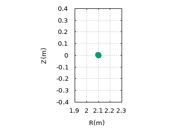
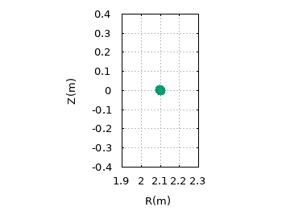

YouJun Hu's Homepage
YouJun Hu (胡友俊) [CV]
Institute of Plasma Physics, Chinese Academy of Sciences
Email: yjhu@ipp.cas.cn
Research interests
Computational plasma physics; Machine learning
I am currently working on using machine learning to reconstruct magnetic/kinetic equilibrium in tokamaks. Meanwhile, I also work on particle simulation of tokamak turbulence, the interaction of energetic particles and MHD modes, and noninductive current drive. I love programming (primarily in Python and Fortran). Some codes I developed can be found here
Research notes
- Notes on Tokamak equilibrium [PDF]
- Nonlinear gyrokinetic equation [PDF]
- Particle in cell simulation [PDF] [source code]
- Guiding center motion in tokamaks [PDF]
- Linear MHD Theory of Tokamak Plasmas [PDF] [HTML] [HTML in one file]
- Notes on Collisionless Drift Kinetic Equation [PDF] [HTML]
- Notes on Landau damping [PDF] [HTML]
- Numerical modeling of neutral beam injection
- Beam driven current
- Fokker-Planck collision operator
- Computational Physics [PDF]
- Fourier analysis [PDF] [HTML]
- Machine Learning [PDF]
- Full orbit integrator: Boris algorithm
Publications
-
Anisotropic distribution of alpha particles in a tokamak reactor ,
Youjun Hu, et al., Nucl. Fusion 65 (2025) 066022
-
Simulation of neutral beam current drive on EAST tokamak,
Youjun Hu, et al., Phys. Plasmas 30, 092507 (2023)
-
Fast equilibrium reconstruction by deep learning on EAST tokamak,
JingJing Lu, Youjun Hu, Nong Xiang, Youwen Sun, AIP Advances 13, 075007 (2023)
-
Effects of resonant magnetic perturbations on neutral beam heating in a tokamak,
Youjun Hu, et al., Phys. Plasmas 28, 122502 (2021)
-
Fully Kinetic Simulation of Ion-Temperature-Gradient Instabilities in Tokamaks,
Youjun Hu, Matthew T. Miecnikowski, Yang Chen and Scott E. Parker, Plasma 1, 10 (2018)
-
Kinetic-MHD hybrid simulation of fishbone modes excited by fast ions on EAST tokamak,
Youbin Pei, N. Xiang, Youjun Hu, Y. Todo et al., Phys. Plasmas 24, 032507(2017)
-
Simulation of fast-ion-driven Alfven eigenmodes on EAST tokamak,
Youjun Hu, Y. Todo,Youbin Pei, Guoqiang Li, Jinping Qian, et al., Phys. Plasmas 23, 022505 (2016)
Erratum_2016-3-11.PDF - Numerical study of Alfven eigenmodes on EAST tokamak,
Youjun Hu, Guoqiang Li, N. N. Gorelenkov, Huishan Cai, et al., Phys. Plasmas 21, 052510 (2014)
Erratum_2014-8-22.PDF - Electron shielding current in neutral beam current drive in general tokamak equilibria and arbitrary collisionality regime,
Youjun Hu, Yemin Hu, and Y.R. Lin-Liu, Phys. Plasmas 19, 034505 (2012) - Relativistic collision operators for modeling noninductive current drive by waves,
Youjun Hu, Yemin Hu, and Y.R. Lin-Liu, Phys. Plasmas 18, 022504 (2011).
Erratum_2012-7-19 - Drift kink instability in the current sheet with a kappa-distribution,
Youjun Hu, Weihong Yang, Yinhua Chen, et al. Phys. Plasmas 15, 082114 (2008). - Lower-Hybrid Drift Instability in Modified Harris Current Sheet,
Hu Youjun, Yang Weihong, Chen Yinhua et al., Plasma Sci. Technol. 10, 416 (2008). - Resonant absorption via mode conversion in magnetized inhomogeneous plasma,
Hu Youjun, Yang Weihong, Chen Yinhua, Zhang Yu, Chinese Journal of Computational Physics (in Chinese) Vol. 24, No. 3, 330-336 (2007)
Some Visualizations
The following figures visualize magnetic field lines on tokamak magnetic surfaces with different values of safety factor q.
Fig. Magnetic field lines on q=1/10 magnetic surface (upper left), q=1/2 magnetic surface (upper right), q=1 magnetic surface (middle left), q=2 magnetic surface (middle right), q=3 magnetic surface (lower left), and q=4 magnetic surface (lower right). Source codes for producing these figures: p.sh and torus.sketch.
 

Fig. Left: 3D view of guiding-center motion in tokamak; Right: 2D poloidal view